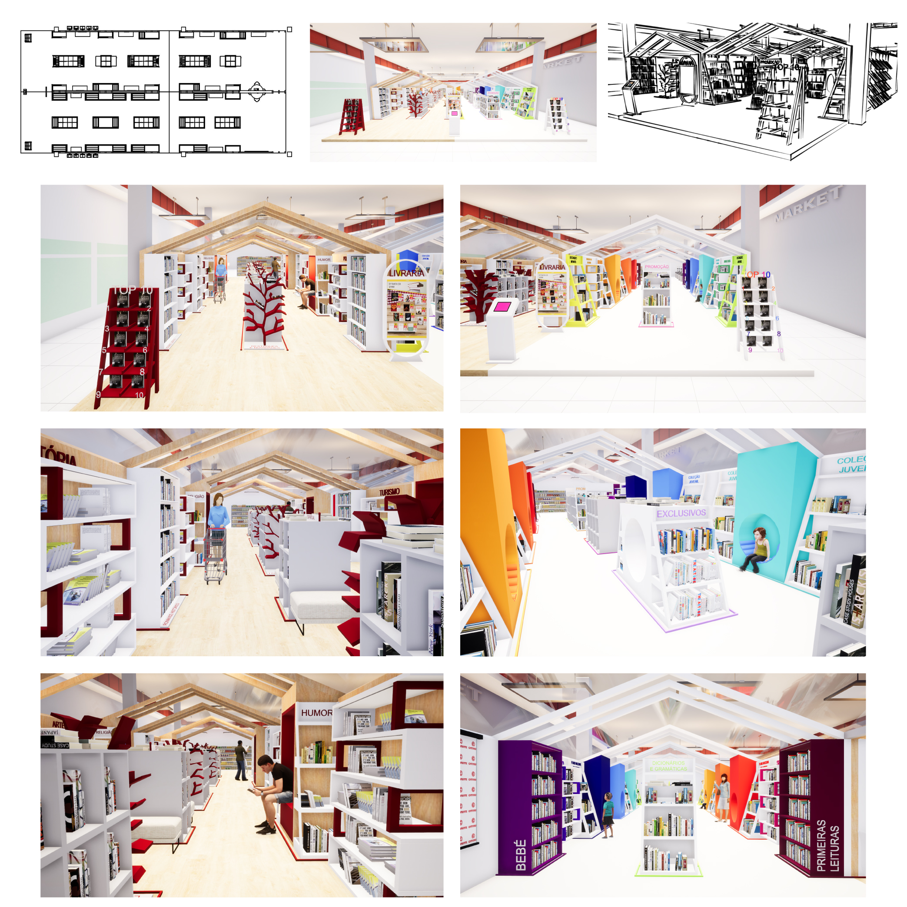

Fabiana Pereira
Design de interiores
Esta proposta de trabalho tem como objetivo encontrar um conceito inovador para redefinir a forma como vemos o espaço de leitura, para conhecer, ler e comprar livros. Devemos criar novos espaços emotivos, expressivos e envolventes, onde os protagonistas são os livros. Para além do referido, precisamos de estudar a área determinada, as pré-existências visuais, os materiais, os aspetos ergonómicos, entre outros, bem como ter em conta as questões ambientais e a sustentabilidade. Devemos projetar um espaço inovador em termos de organização e versatilidade, que obedeça a critérios de funcionalidade, procurando soluções inovadoras, harmoniosas e seguras.
Para iniciar o projeto devemos ter em conta alguns conceitos importantes, como o público-alvo, a sinalética, o conforto, entre outros. É importante pensar em todas as questões que o continente impõe e fornecer a melhor solução. Após isto, fez-se uma pesquisa de mercado, a nível global e uma mais focada. Pesquisou-se espaços de livraria inseridos numa grande superfície, livrarias pelo mundo e imagens sobre os temas: mobiliário, conforto, sinalética e estruturas. Todas as pesquisas serviram de inspiração e crescimento a nível pessoal e profissional. A principal inspiração para o espaço dedicado a crianças foi a livraria "The Poplar Kid's Republic - Beijing", pela variada paleta de cores e o convite que faz a entrar, através dos círculos, que servem para ler.
Com as ideias já definidas, fez-se os primeiros esboços, procurando trazer a forma de uma casa para o espaço, no sentido em que a pessoa se possa mesmo sentir em casa (bem e confortável). Dividiu-se o espaço em duas partes, 127,5 m2 cada, uma parte direcionada para os adultos e outro infantil/juvenil. Manteve-se a organização dos corredores atuais, ou seja quatro, neste caso dois em cada espaço, acrescentando-se duas entradas nas laterais da estrutura, para fazer a ligação das estruturas no interior, e manteve-se a entrada frontal e traseira. Para além disto, trabalhou-se a parte das revistas no exterior, deixando o restante espaço livre ao critério do continente (área do material escolar, material da NOTE!, entre outros).
A livraria dos adultos é minimalista, simples e orgânica, com o chão em soalho carvalho americano e a estrutura em carvalho europeu, com acabamento natural. A livraria infantil/juvenil, possuí na mesma uma estrutura em madeira, mas pintada em branco, o chão é revestido a linóleo na cor bege e a maior parte dos módulos são coloridos, seguindo o círculo cromático, e acrescentando mais algumas necessárias. Acredita-se que assim, o espaço se torna mais chamativo, criativo e convidativo, tornando a leitura de fácil acesso e interessante. A distribuição do mobiliário pretende ser o mais organizada e coerente possível, aproveitando o espaço na sua totalidade. Para além da organização do espaço, foi necessário um estudo de quantos livros precisava cada tema, incluindo qual o melhor tamanho e o melhor móvel para o mesmo. Caso seja necessário alterar a ordem dos mesmo, apenas será possível alterar os móveis que foram referidos em cima. A iluminação escolhida é a fita led, na cor branca, iluminando o espaço através das ripas do teto e da colocação de cada fita por baixo das prateleiras do mobiliário.
